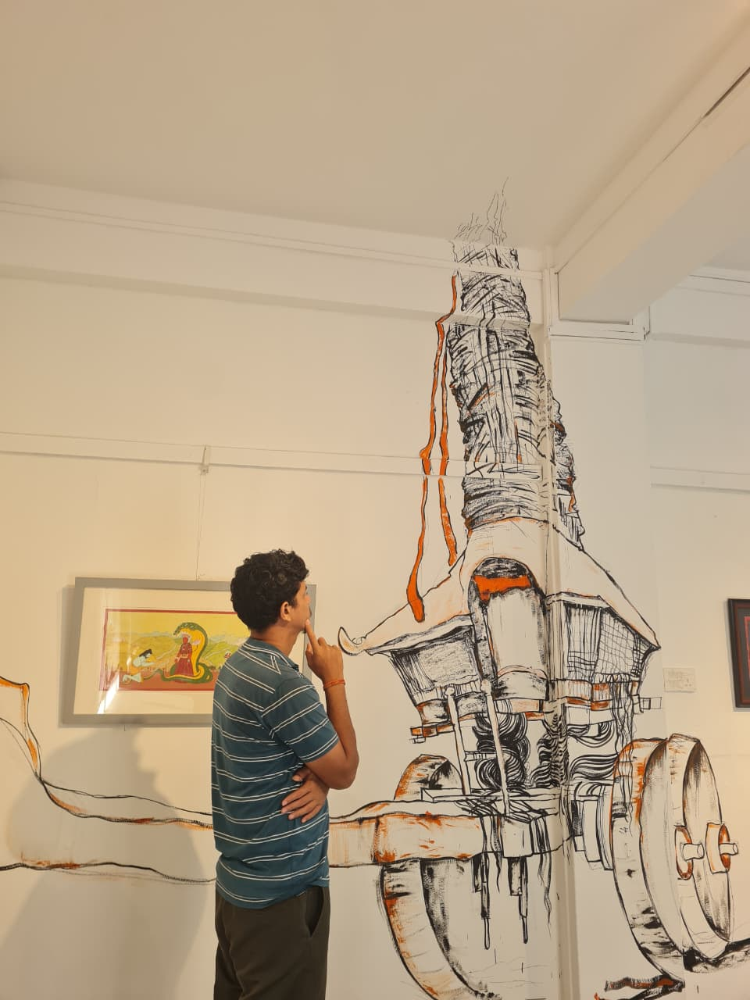
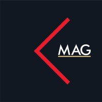
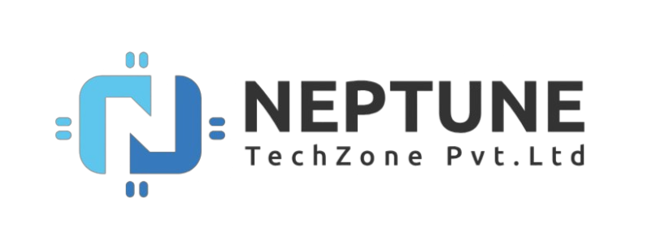

Graphic Design Intern
Designer based in Nepal
Sujeet Khadka makes digital things feel clearer.
I’m Sujeet — a UI/UX and visual designer exploring the space between a good idea and a product people enjoy using.
✳
↗

A designer who learns by making
— Kathmandu, Nepal
UI/UX design✦User research✦Wireframing✦High-fidelity prototyping✦Usability testing✦Developer handoff✦Design systems✦Branding & identity✦Figma✦Adobe Photoshop✦UI/UX design✦User research✦Wireframing✦High-fidelity prototyping✦Usability testing✦Developer handoff✦Design systems✦Branding & identity✦Figma✦Adobe Photoshop
01 / Experience map
Still moving,
still making.
A nonlinear path through design, technology, and the work that shaped how I think about useful products.

KMGraphic Designer & UI/UX · Part-time
KMAG Pvt. Ltd.
Collaborated on a Figma UI redesign across mobile and desktop, while creating product assets and logo drafts with brand accuracy.↗
NCUI/UX Designer
Neptune TechZone · Aama Cure
Designed and shipped the live Android and iOS maternity health app end to end: research, wireframes, prototypes, testing, handoff, and implementation review.↗UI/UX & Graphic Designer · Freelance
Upwork · webapex.com.au
Delivering logically structured web banners and digital assets for an Australian client, with responsive layouts and international brand standards.↗✦ Hover a milestone to expand its story ✦
The games and experiments live in my project notebook ↗02 / From the notebook
Thinking out
loud.
Notes on interfaces, product decisions, and the tiny details that shape how digital things feel.
03 Jun 2026↗
08 May 2026↗
18 Dec 2025↗
See all writing on Medium ↗
Interaction design · 7 min read
Why LinkedIn and Reddit intentionally broke the ‘enter’ key
A closer look at how one tiny interaction changes the rhythm of writing, and what that teaches us about intentional friction.Visual design · 6 min read
The great UI shrink: is minimalism a design philosophy or a corporate trap?
When “less” becomes a default, what gets removed—and who is left doing the work of understanding the product?UX case study · 8 min read
Improving eSewa’s user experience
Reducing accidental top-ups and fixing home-screen clutter through clearer hierarchy and calmer decisions.03 / A little about me
Sujeet Khadka:
curious by nature.
I’m a designer from Nepal. My work began with a final-year school project and grew through personal experiments in mobile games, small web products, and interface design.
I learn by making — designing in Figma, building selected ideas with Godot, HTML, CSS, and JavaScript, and using AI-assisted tools to explore and iterate.
04 / Have an idea?